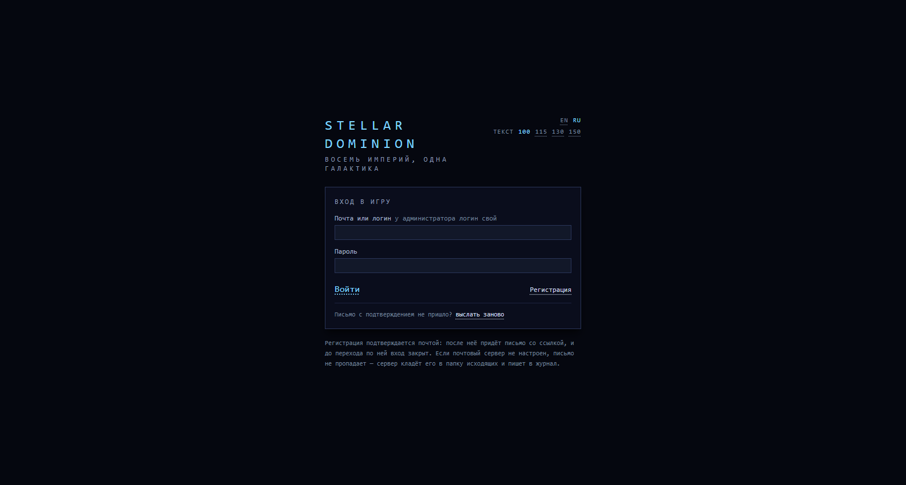
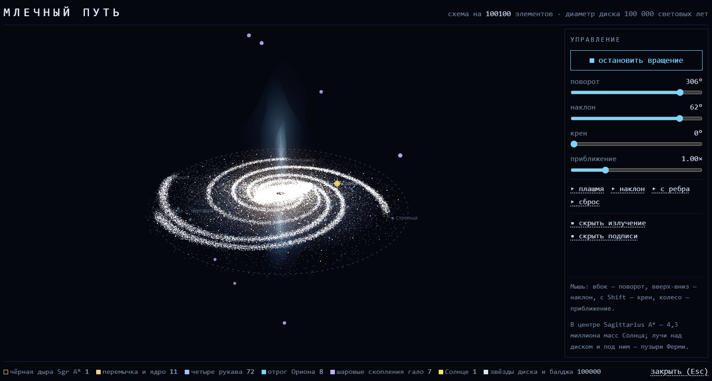
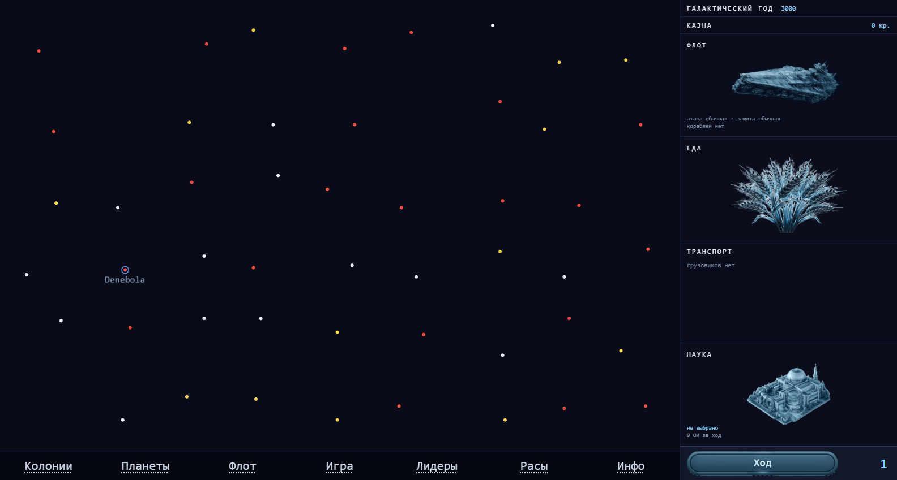
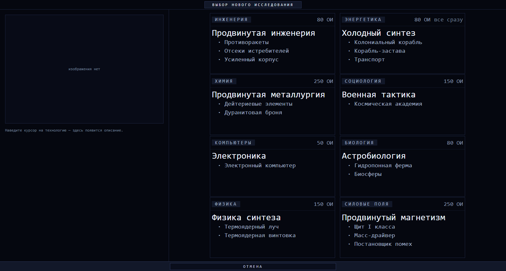

Раздел 1
Компоненты системы и их связи
Ядро простое: клиент говорит с сервером по REST и слушает события партии, сервер держит партии в PostgreSQL, а правила игры читает из JSON-справочников на диске. Всё остальное на схеме — мастерская: инструменты, которые ту же игру меряют, расшатывают и учат.
Данные, а не код
Новое здание, технология, пушка, корпус или лидер — запись в JSON, а не ветка в сервисе. В базе от них остаются только коды.
Один расчёт — одно место
Все числовые правила MoO2 живут в PopulationCalculator, боя — в
BattleRules, полёта — в FlightRules. Величина, посчитанная
дважды, однажды разойдётся.
Ход считается один раз
Галактика вычитывается раз на ход и передаётся фазам контекстом. Выборка «на игрока» внутри хода бьёт по всему ходу.
Раздел 2
Как приборы балансировки работают вместе
Задача у них одна: назначить честную цену каждой стороне расы — их полсотни, и игрок собирает из них свою расу на заданный бюджет. Цена не назначается на глаз: её меряют, и меряют в четыре этапа, где каждый следующий проверяет предыдущий.
Почему оценщику нужен взломщик
Пульт назначает цены по случайным сборкам, а живой игрок случайной не играет: он ищет сильнейшую. Комбинацию, которая бьёт всё остальное, случайными сборками не поймать — она встречается раз на тысячу. Оракул ищет её нарочно и отвечает на два вопроса плана: нет ли доминирующей сборки и какие стороны не вошли в верхушку.
Семь мерил силы
Выработка и наука с весом 1; деньги, военная сила, наземный бой, широта науки и разведка — с весом ½. Одного мерила мало: жителя в MOO II ставят либо к станку, либо в лабораторию, и без мерила науки «плохие учёные» за −3 очка выходили выгодной покупкой (+1,19), а с ним встали на место (−3,43).
Вес берётся регрессией
Стороны покупают не поодиночке, и сильная тянула бы за собой всё, что обычно стоит рядом. Доля приводится к нулю внутри партии, стартовый угол идёт столбцами.
У связки своя цена
Цены сторон складываются, а сила иных пар умножается. Поэтому у пары есть надбавка — и она тоже измеряется, а не назначается.
Пусто ≠ ноль
Мерило, не сработавшее в партии ни разу, отдаёт пусто. Ноль у всех — это «мерить нечем», а не «все одинаково слабы».
Раздел 3
Нейросеть: устройство и обучение
Сеть учится играть в нашу игру, а не в оригинал, и причина простая: партия у нас считается по REST за секунды, а в DOSBox — это полчаса настоящей мыши. Тысячи партий там не сыграть ни за какое время.
Каждая голова заведена не для полноты, а после замера, показавшего, что без неё учиться нечему. Сеть, умевшая только строить, за шестьдесят ходов не вышла из родной системы ни разу — колония одна, флотов ноль; сеть, не трогавшая жителей, играла тем распределением, какое колония получила при основании.
Раздел 4
Способ разработки: снятие сцен с оригинала
Половина окон MOO II нигде не выложена, а по памяти разметку не восстановить. Поэтому разметка наших экранов сверяется со снимками настоящей игры, снятыми в DOSBox. Инструменты для этого выросли в отдельную подсистему.
Почему записывать человека оказалось дешевле, чем догадываться
Инструмент не умел переставлять жителей с работы на работу — и не умел никогда. Это чинилось четырьмя заходами подряд, и каждый стоил партии: перетаскивание фигурки, нажатие по фигурке, нажатие по свободному месту, перебор всего ряда. Наблюдения противоречили друг другу. Хозяин проекта назвал правило одной фразой: нажатие берёт всех, кто правее точки, а следующее кладёт их туда, где курсор. Всё сошлось с первой попытки. Орионометр и родился из этого счёта: вопрос стоит одной фразы, а перебор догадок — часов и испорченных партий.
Три грабли, на которых узнавание сцен ломалось
Снимают с неподвижного
У колонии примета бралась с угла, где стоит портрет губернатора, — только что основанная колония не узнавалась вовсе. У окна выкупа — с вопроса, где стоят цена и объём, а они меняются каждый раз.
Бедная — глотает чужое
Тёмная полоса во всю высоту экрана совпадает почти с чем угодно: ею оказались помечены 50 нажатий по 32 разным точкам — в окне, где кнопка одна.
Окно над картой — «поверх»
Примета карты снята с нижней полосы, а она видна из-под любого окна. Так спрятались ровно те две вещи, ради которых всё и делалось: отправка флота и начало боя — 37 кадров под чужим именем.
Вывод, записанный в грабли проекта: отсутствие чего-то в протоколе — это утверждение о приборе, а не о мире.
Раздел 5
Экраны игры
Снято с работающей сборки: сервер на 8080, клиент на 5173, партия на средней галактике с четырьмя империями. Разметка каждого экрана сверена со снимком соответствующего окна оригинала.




Раздел 6
Приборы измерения: пульт и оракул подробно
Оба отвечают на один вопрос — сколько стоит сторона расы, — и отвечают по-разному. Пульт меряет цены по случайным сборкам и выносит приговор каждой. Оракул делает обратное: нарочно ищет сборку, которая бьёт всё остальное. Оценщик и взломщик работают по очереди, и найденное взломщиком идёт в следующий замер.
Ниже — устройство обоих по коду: BalanceRunService,
BalanceVerdictRules, RaceBuildGenerator,
LeastSquares, BalanceOracleService,
BalanceOracleRules. Все числа — из этих файлов, а не из общих
соображений: каждое стоит там с объяснением, откуда оно взялось.
Пульт балансировки — оценщик
Хозяин игры описывает прогон из браузера: галактика, сколько империй и чем каждая играет, сколько партий и по сколько ходов, какую связку подсадить. Сервер играет их в фоне и возвращает не сырые замеры, а приговор каждой цене.
Что прибор делает, прежде чем начать считать
- Снимает цены до первой партии. Прогон идёт десятки минут, а цены правятся с соседнего экрана и прямо в файле. Снимок лежит в самой записи прогона — иначе через день нельзя сказать, какие цены он мерил.
- Пускается после фиксации транзакции. Фоновый поток первым делом читает запись прогона и из незакоммиченной транзакции её не находит: прогон молча замирал со словами «идёт» и нулём партий.
- Идёт один за раз — исполнитель на один поток. Партий разом столько,
сколько даёт
BalanceLoad: ночью в полную силу, днём меньше, и предел спрашивается перед каждой партией, а не при старте — иначе менять его значило бы перезапустить сервер, то есть убить идущий прогон.
Откуда берутся сборки
RaceBuildGenerator выдаёт законную сборку ровно на бюджет — ту
же, что собрал бы игрок: не больше одной стороны из группы-переключателя, без
несовместимых пар, с надбавками за связки. Три решения внутри него важнее прочих.
Умеет продавать слабости
Пока генератор брал одни плюсовые стороны, вся минусовая половина таблицы была слепым пятном: четырнадцать сторон из пятидесяти трёх не попадали в замер ни разу, и цену им нечем было проверить.
Возврат выбирается заранее
Жадный набор брал бы слабости всегда — они ведь только освобождают очки, — и возврат почти всегда упирался бы в потолок. Тогда замер сравнивал бы не «со слабостью и без», а «с этой слабостью и с той».
Бесплатное добирается в конце
Там, где группа осталась пустой. Так в сборке всегда есть строй: в конструкторе он есть у каждой расы, диктатура просто не стоит ничего. Без этого сборка на ноль очков была расой вовсе без строя — состоянием, в котором игрок не бывает.
Случайная сборка переигрывается на каждую партию, а не один раз на прогон: наблюдений в такой выборке столько, сколько сборок, а не сколько империй. И сборки переставляются по местам от партии к партии — стартовый угол главный источник разброса, и закреплённая за местом сборка забирала бы его удачу себе.
Семь мерил силы
| Мерило | Вес | Чем считается | Почему столько |
|---|---|---|---|
| PRODUCTION | 1 | доля выработки партии | основа: с неё разрыв бюджетов виден уверенно, тогда как по мощи тонул в своей же ошибке |
| RESEARCH | 1 | доля науки партии | вторая половина хозяйства: жителя ставят либо к станку, либо в лабораторию |
| MONEY | 0,5 | доход за ход | поток вторичный: кредиты обращаются в производство по 2–4 за единицу. Не казна — она запас |
| MILITARY | 0,5 | сила построенных кораблей | флот не поток, а вложение; не строивший флот получает ноль — и это верно |
| GROUND | 0,5 | взятые десантом колонии минус потерянные | одни захваты не различали бойцов вовсе: 0,73 / 0,56 / 1,04 при ценах 2 / 1 / −1 |
| TECHNOLOGY | 0,5 | число изученных технологий | заведено ради изобретательности: её польза в широте, а мерило науки такой разницы не видит |
| ESPIONAGE | 0,5 | доведённые до конца задания | не поток, а орудие: горстка событий за партию, и доля прыгает сильнее прочих |
Приговор выносится по сумме (TOTAL), но пульт показывает и
слагаемые: «сильно» и «сильно, но только в науке» — разные вещи, и решает их хозяин
проекта, а не прибор.
- Доля приводится к нулю внутри партии. Среднее известно заранее — сто процентов на число империй, — и вычитая его, эффект галактики убирается целиком, без отдельного столбца на партию.
- Наземный бой — своим способом. Он и так разность взятого и потерянного, и среднее по партии у него тождественно ноль: всякий захват — чья-то потеря. Вычесть оттуда 100/n значило бы наказать всех, кто в этой партии не воевал на земле.
- Пусто — это не ноль. Мерило, не сработавшее в партии ни разу, даёт ровно ноль, а не минус среднее: иначе отсутствие замера стало бы замером.
Как замер превращается в приговор
Пороги, по которым выносится приговор
| Число | Значение | Что означает |
|---|---|---|
| MIN_TAKERS | 12 | меньше носителей — сторона не измерена вовсе, и приговор ей «не измерена», а не «адекватна» |
| MAX_SHARE_OF_TAKERS | 0,5 | взятую больше чем половиной сборок не мерим: «не взявшие» купили вместо неё соседку по группе, и сравнение выходит не с отсутствием, а с заменой. Бесплатная диктатура стоит в 97 % сборок |
| ERRORS_TO_JUDGE | 2,0 | обычный порог различимости. Меньше двух ошибок — это разброс партий, а не свойство стороны |
| RIDGE_SHARE | 0,02 | гребень долей от числа наблюдений: с ростом выборки сжатие остаётся соразмерным, и цены не прыгают оттого, что прогон стал длиннее |
| MAX_FAIR_PRICE_BUDGETS | 2,0 | справедливая цена дальше двух бюджетов не показывается: это уже не осторожная оценка, а мусор. Приговор при этом остаётся — он от деления не зависит |
| DAMPING | 0,4 | цена двигается долей пути к измеренной, а не в точку: ценность зависит от цены, и прыжок раскачивал бы цены вместо того, чтобы их успокаивать |
Курс очка берётся из самих замеров — по различимым сторонам строится прямая «цена — сила», её наклон и есть курс. Единый курс, снятый по бюджетам на этапе 1, для этого не годится: он оказался неотличим от нуля, потому что сильные стороны в случайной сборке гасятся слабыми.
Шкала цен и шкала ценностей разошлись, и это главный вывод этапа 2: очко стоит около 0,05 п.п. доли выработки, то есть весь бюджет в пятнадцать очков — три четверти пункта, а одни «хорошие промышленники» за четыре очка дают два с половиной пункта, больше трёх полных бюджетов. Поэтому совет зажимается в то, что таблица выразить может, а показанная справедливая цена — нет: пусть видно, насколько сторона выходит за выразимое.
Связки сторон — второй замер
У половины таблицы честный ответ «сама по себе ничего не стоит»: киборги только едят, а с промышленниками и голодным миром они и есть Меклар. Такие стороны покупают не поодиночке, и мерить их поодиночке — значит мерить не то, за чем игрок к ним идёт. Поэтому в замер добавляется столбец на связку: единица там, где взяты обе стороны сразу, а его вес — ровно то, что связка даёт сверх своих половин.
- Это второй замер, а не первый. Столбцы связок отбирают вес у самих сторон, а цену игрок платит за сторону, в какой бы сборке она ни оказалась. Приговоры ценам остаются с первого замера.
- Пар берут сорок самых частых при пороге в двенадцать носителей: пар из полусотни сторон больше тысячи, и столбец на каждую сделал бы матрицу шире выборки — выродился бы весь замер, а не только связки.
- Порог растёт с числом проверок. Проверяется не одна названная пара, а сорок разом, и самый крайний из сорока независимых замеров уходит от нуля примерно на √(2·ln 40) ≈ 2,7 ошибки сам по себе. На первом настоящем прогоне прибор так и выдал ровно одну «находку» — связку, которой неоткуда взяться.
- Фон вычитается медианой. Гребень сжимает веса сторон к нулю, и столбец связки подбирает остаток модели: на выдуманных данных без всякой связки прибор насчитал ±0,44 при собственной ошибке 0,2. Медиана прибавок по всем парам и есть фон, а находкой считается то, что торчит из него втрое.
- Тройка — не прихоть. У неё свой столбец рядом со столбцами всех трёх пар внутри себя, поэтому её вес отвечает на точный вопрос: даёт ли тройка что-то сверх того, что уже дают её пары и одиночки.
- Подсадка идёт жребием на каждую сторону — у пары четыре четверти, у тройки восемь восьмых. «Все или никто» было бы губительно: столбец связки совпал бы со столбцами её частей, и веса у такого набора не определены ни один.
Невязка — чем меряется успех круга
Медиана расхождения между ценой и тем, что сторона заработала, в очках цены. Не счёт «адекватных»: тот измеряет не баланс, а размытость прогона. Измерено по повторам на одной и той же таблице цен — в одной тройке прогонов адекватных вышло 20, 40 и 27, размах больше, чем весь путь журнала от первого прогона до лучшего, — а по 37 прогонам связь «больше медианная ошибка → больше адекватных» даёт r = +0,83. Невязка на тех же повторах стояла: 6,4 / 6,4 / 6,8.
Полоска ошибки в неё не входит вовсе: считается разница между ценой и заработанным, а не «отличимо ли одно от другого». Размытому прогону нечем себя приукрасить. Берётся медиана, а не среднее: у насыщенных сторон честная цена выходит за два десятка очков при потолке анти-выбора в десять, и среднее они перетянули бы на себя целиком.
Оракул сборок — взломщик
Цены, честные в среднем по всем сборкам, могут оставить в таблице одну-две комбинации, которые бьют всё остальное. Заметить это, меряя случайные сборки, нельзя в принципе: сильнейшая встречается среди них раз на тысячу. Оракул ищет её нарочно.
Поколениями с отсевом
Сборки играют партии, худшая половина отсеивается, на её место приходят потомки выживших — та же сборка с одной заменённой стороной. Потомок законен по построению: выброшенная сторона запрещается, остальные объявляются обязательными, а бюджет добирает тот же генератор — второго свода правил законности в приборе нет.
| Число | Значение | Что означает |
|---|---|---|
| EXPLORE_GENERATIONS | 4 | сколько поколений идёт разведка. Дальше поиск кончается и начинается спор за первое место: поле сжимается вдвое и больше не пополняется |
| FINAL_TABLES | 2 | во сколько столов упирается отсев — шестнадцать финалистов. Было в один стол: восемь сборок на полсотни сторон, и «мёртвую сторону» такое поле назвать не может |
| MAX_TURNS | 500 | потолок длины партии, равный длине партии замера. Было 300 — и это оказалось потолком не времени, а зрения |
| GAME_WORKERS | 10 | партий разом. Прежние четыре брались «всё упирается в базу» — замер показал занятыми ядро с четвертью из двенадцати |
| TOP | 20 | сколько сборок считать верхушкой при проверке обоих условий плана |
| GAMES_SHARE_FOR_TOP | 0,25 | какую долю партий лидера сборка должна отыграть, чтобы её вообще ставили в верхушку |
| COMPETING_BUILDS | 3 | разрыв меряется между первой и третьей сборкой, а не с серединой верхушки |
| DOMINATION_GAP | 1,0 | процентный пункт доли выработки: примерно десятая доля того, что даёт весь бюджет |
Горизонт — это тоже прибор
С потолком в 300 ходов отсев решался на партиях в 50, 100 и 200, и до финала доживали спринтеры. В круге 5 лидером вышла сборка, продавшая учёных и бойцов, — а замер на пятистах ходах тем же вечером назвал «плохих учёных» дорогими. Спорили не приборы, а горизонты.
Соседи тасуются каждое поколение
Сила меряется долей, то есть всегда относительно тех, кто сидит в той же партии. Закрепи соседей — и оракул начнёт искать не сильнейшую сборку, а удачное соседство.
Три сборки вровень — это и есть баланс
Прежде разрыв считался с серединой верхушки, и это было слишком строго: требовать, чтобы лучшая не отрывалась от двадцатой, значит требовать, чтобы выбор расы ничего не значил. Вопрос другой: есть ли у сильнейшей достойные соперники.
Барьер, который ничего не делал
После пола отсева состав финалистов не меняется ни разу, а цикл всё равно шёл поколениями по два стола с ожиданием между ними: на прогоне в двести партий так проходило около девяноста поколений из ста. Остаток теперь играется одной пачкой — те же партии с теми же соседями, только их больше не ждут по две.
Что оракул отвечает
Ровно на два условия плана, и на второе — двумя списками, а не одним:
- Есть ли доминирующая сборка — разрыв первой с третьей против допуска в один пункт. Сборок в верхушке меньше трёх — такая верхушка считается доминирующей: выбора там нет по построению.
- Мёртвые стороны — те, что поиск пробовал, но ни в одну сборку верхушки они не вошли. По плану это «механика не работает», а не «сторона дорога».
- Непробованные — те, которых поиск не ставил ни в одну сборку ладдера. Про них сказать нечего, и валить их к мёртвым значит выдавать пробел поиска за приговор стороне.
Мерило у оракула то же самое, что у приговоров ценам, — и это не экономия, а условие: двух разных мерил в одном приборе быть не может, иначе оценщик и взломщик спорили бы не о ценах, а о том, что считать силой.
Как они смыкаются в круг
Замер назначает цены → цены правятся долей пути → оракул ищет, что из новых цен можно выжать → находки идут в следующий замер подсаженной связкой → и всё сначала. Обе записи живут в одной таблице прогонов, различаясь только родом: это тот же прогон партий, просто с другим вопросом. Каждая правка цены ложится в журнал вместе с тем, на чём она измерена, — без журнала через месяц не откатить и не понять, откуда цена взялась.
Прогон, застигнутый остановкой сервера, закрывается при следующем старте: его поток умер вместе с процессом, а оставленный «идущим» он навсегда запер бы пульт.
Раздел 7
Технические детали
Из чего собран сервер
| Пакет | Классов | Что там |
|---|---|---|
| service/ | 105 | вся игровая логика; service/stub/ — точки расширения без реализации |
| dto/ | 101 | контракты REST; пустые поля не сериализуются вовсе |
| domain/enums/ | 37 | игровые правила таблицами |
| web/ | 29 | контроллеры по подсистемам и обработка ошибок |
| repository/ | 29 | Spring Data; выборки внутри хода с явным порядком |
| domain/entity/ | 24 | JPA-сущности партии |
| galaxy/ | 4 | генерация галактики, планет, родных миров |
Ключевые службы
PopulationCalculator
Все числовые правила MoO2 в одном месте: выработка, рост, деньги, загрязнение, цена выкупа стройки. Формулы правятся только здесь.
ColonyService
Занятия жителей, выработка со зданиями, очередь стройки, продажа построек, выкуп, загрязнение. Очередь хранится строкой в самой планете.
TurnService + TurnContext
Галактика вычитывается один раз на ход и передаётся фазам контекстом. Фаза, что изменила состояние, правит и контекст.
ShipDesignService + ShipDesignRules
Шесть ячеек проектов не пустуют; обновление идёт новой строкой, а старая помечается вытесненной — построенный корабль остаётся с тем, с чем построен.
TacticalBattleService + BattleRules
Поле 32×20, корабли поимённо, очередь по инициативе корабля. Попадание считается кривой оригинала; пробитая броня выбивает случайное гнездо.
FleetService + FlightRules
Дальность от ближайшей своей опоры, время в пути по самому медленному кораблю. Летящий флот не стоит нигде.
AiEmpireService
Стройка по окупаемости, расселение, оборона по угрозе, выкуп за кредиты, разведка и подчинение телепатами. Механика, к которой у ИИ нет пути, для балансировки мертва.
BalanceRunService + BalanceOracleService
Оценщик и взломщик. Цены снимаются до первой партии и лежат в самой записи прогона: цены правятся с соседнего экрана, и без снимка не сказать, что он мерил.
Пятнадцать фаз конца хода
Новая фаза — новый бин; TurnService подхватит сам. Порядок как в MoO2:
Сущности партии
GameEntity · PlayerEntity · StarSystemEntity · PlanetEntity · PlanetBuildingEntity · FleetEntity · FleetShipEntity · FleetEncounterEntity · ShipDesignEntity · ShipDesignComponentEntity · SpaceBattleEntity · BattleShipEntity · PlayerTechnologyEntity · PlayerLeaderEntity · PlayerExploredSystemEntity · PlayerEventEntity · DiplomacyRelationEntity · CouncilVoteEntity · SpyEntity · PopulationTransferEntity · EmpireHistoryEntity · EmpireActivityEntity · TurnReportEntity · GameSaveEntity
Справочники — данными, а не кодом
| Файл | Размер | Что описывает |
|---|---|---|
| Technologies/tech.json | 75 КБ | дерево из восьми разделов; у технологии есть код, и он же лежит в базе |
| Ships/ship-components.json | 59 КБ | корпуса, компоненты, 14 модификаций оружия, платформы обороны, тела чудищ |
| Races/race-traits.json | 58 КБ | 53 стороны расы в 18 группах, тринадцать готовых рас, развитые строи |
| Leaders/leaders.json | 44 КБ | лидеры со званиями, способностями и приносимыми технологиями |
| Buildings/buildings.json | 20 КБ | здания парами «тип эффекта — количество» |
Все пять двуязычны: поле — либо строка, либо пара { "en": …, "ru": … }.
Язык выбирается при обращении, а не при чтении файла: справочник разбирается один раз
и лежит в памяти общим для всех запросов.
Договорённости, на которых всё держится
- Отказ API несёт ключ, а не текст. Переводит его один обработчик; подстановки переводятся тоже. Слово, сохранённое в базе на одном языке, потом не перевести ничем.
- Отчёт хода хранится ключом, а переводится при чтении. Ход заканчивает один игрок, а отчёт открывают все — у каждого свой язык.
- Цвет текста — роль, размер — ступень шкалы. Шесть ролей с измеренным контрастом на основном фоне; оттенков по месту в интерфейсе нет.
- Случайность выводится из зерна партии везде — лидеры, бои, исследования, события. Иначе парные прогоны сравнивали бы не расы, а удачу.
Шесть ролей цвета и их контраст
Эта страница набрана теми же ролями — это палитра самой игры, а не подобранная заново.